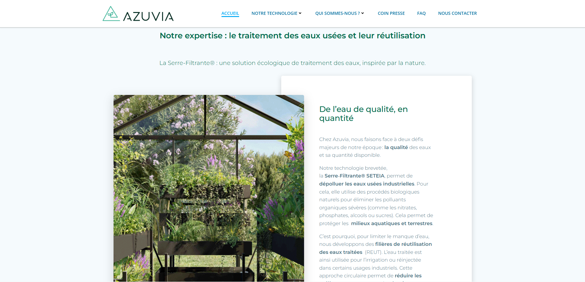
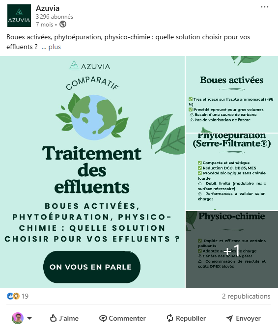
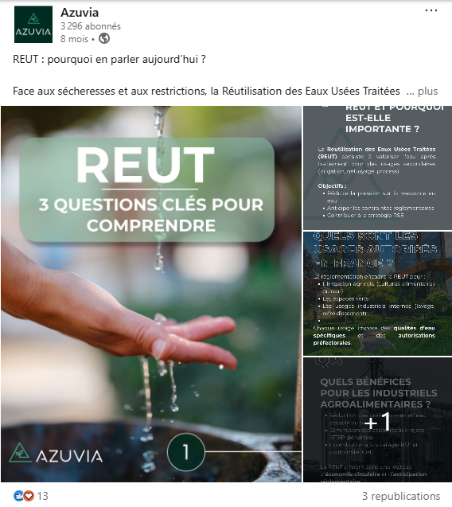
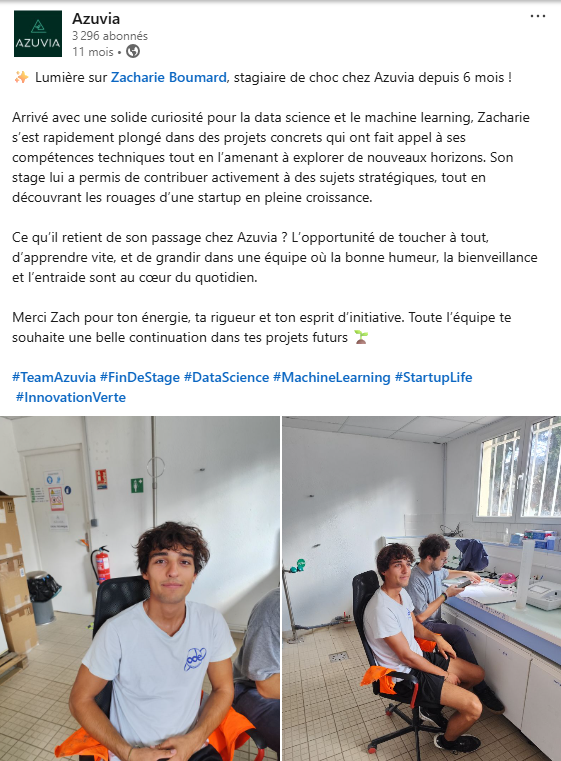

// Alternance growth hacking — startup du traitement durable de l'eau
Sept mois d'alternance au sein d'Azuvia, où j'ai piloté la création de contenu SEO, la stratégie réseaux sociaux et contribué aux supports de communication et à l'UX du site.
Client
Azuvia
Cadre
Alternance — 7 mois
Mon rôle
Growth Hacking
Statut
Mission réelle, en production
Le contexte
Azuvia est une startup spécialisée dans le traitement durable de l'eau. J'y suis intervenue en tant qu'alternante growth hacking sur l'ensemble de la chaîne de valeur marketing digital : de la création de contenu à l'optimisation du référencement, en passant par les réseaux sociaux et les supports de communication.
Ce que j'ai fait
Création de contenu SEO : rédaction d'articles optimisés, structuration sémantique, maillage interne et publication sur WordPress.
Optimisation du référencement : recherches de mots-clés, audits techniques, suivi des performances avec Semrush, Google Analytics et Microsoft Clarity.
Stratégie réseaux sociaux : planification et production de visuels et publications pour LinkedIn, en cohérence avec la ligne éditoriale.
Supports de communication : présentations commerciales, templates visuels, supports institutionnels (plaquettes, fiches produits).
Contribution à l'UX : propositions d'amélioration de l'interface et de l'ergonomie du site pour favoriser la conversion et la navigation.
Le rendu




Résultat
8,8%
Taux d'engagement LinkedIn (benchmark B2B : 2-6%)
50,6%
Taux d'engagement GA4 (benchmark site industriel : 50%)